描述標籤版型庫 🎫
2026-07-05 建立 · 2026-08-05 併入長景／霓虹標題那批 · 定位＝版型引用資料庫（James 2026-08-05）
📚 這頁是「引用資料庫」，不是下單頁 —— 收所有疊在畫面上的 overlay 版型，看樣挑款用。
挑好之後去對應的工具下單：
②~③（機票感／遊覽車票／地名條，由 narrative_tag 出）→ 初剪規格選擇器（剪輯工具）
① 雜誌風格標題卡 → 標題選擇器（存變體）
④~⑥ 全場元件／整支版型 → 長篇景色模板（參數鎖定，系列出片）
🔸 下面的「片頭／中場／全場」只是建議時機，不是規定。你要把片頭版型拿去片尾、把全場元件只放中間一段，在 初剪規格選擇器 裡都能自由指定 —— 那邊的描述標籤是動態清單，要幾層加幾層。
🎬 片頭
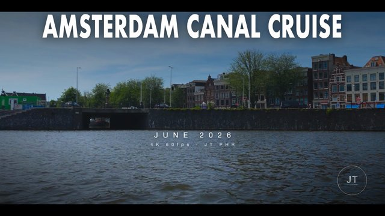
① 雜誌風格標題卡
影片最前面 5 秒的字幕卡，三層：地名（滿版粗黑體） ＋ 中文草寫一句（日記感） ＋ 規格小字。
對標 Abao Vision 開頭那張。字體／配色跟長景同一套，開場接正片不會斷裂。
→ 16:9 進標題選擇器編輯 ｜ → 9:16 進標題選擇器編輯
適用 所有長片開頭 · 中文草寫＝行楷-繁（James 2026-08-05：「中文草寫比較有日記感」）· 之後可加「對話日記」訊息泡泡
| 級距 | 版型 | 票 | 地圖 |
|---|---|---|---|
| ✈️ 洲際 | ②-A | Passage 白色極簡 | 程式 · 真實世界地圖 |
| 🚌 跨區 | ②-B / B′ | 復古米黃票根 | AI · 手繪區域圖（PR-002） |
| 🚄 跨都市 | ②-C | 科技感 HUD | AI · 立體浮空地形圖（PR-010） |
| 🚏 市內 | ②-D | 牛皮巴士票／剪票根 | AI · 市中心立體手繪（PR-007） |
| ⛴️ 水路 | ②-E | 黑白船票 | AI · 古海圖（PR-009） |
流程：在下面找到你這段的版型 → 點進 Prompt 範例庫複製該張的 prompt → 丟 ChatGPT／Gemini 生圖 → 圖傳給 Robert 合成進 FCPXML。
💡 小貼士：短程不要叫 AI 畫真實比例地圖。上海虹橋→蘇州北只有 84 公里，照比例畫就是一片空白加一個點 —— 短程要嘛畫示意路線，要嘛改畫市內街區（②-D）。
🚦 移動中（照距離分級）
每一組都給你 9:16 直式 與 16:9 橫式 兩版並排，直接挑。點任一張圖可放大看細節。
💡 小貼士：75% 是在暗底畫面上調出來的。疊到亮底（機場大廳、白天外景）時地圖會偏灰，覺得糊就跟 Robert 說一聲把該段拉到 90%——一段一段調不影響其他段。
②-A 機票 ✈️ 洲際／長程
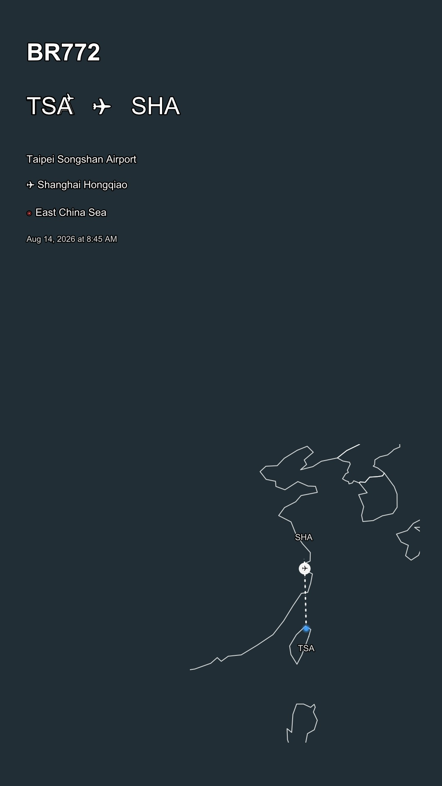
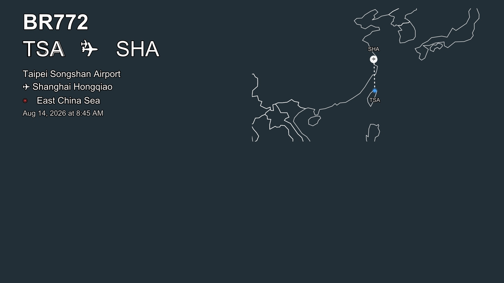
🎫 票（程式出）：Passage 白色極簡：班次＋起訖站＋當前地點＋時間
🗺️ 地圖：程式版真實世界地圖（Natural Earth 國界，航跡照 GPS 走）
②-B 遊覽車票 🚌 跨區／一天多段
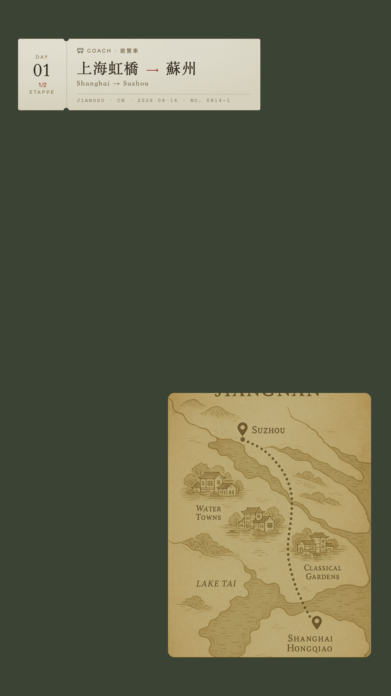
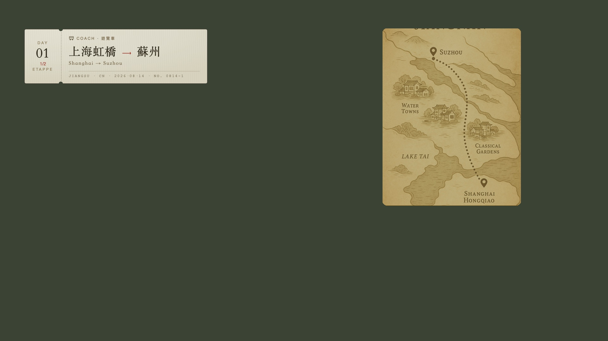
🎫 票（程式出）：復古米黃票根：左票根 Day／段次、線稿圖示、襯線大寫起訖＋朱紅箭頭、撕票口真的挖穿
🗺️ 地圖：AI 復古手繪區域地圖（山林湖泊等級）
②-C 高鐵票 🚄 跨都市
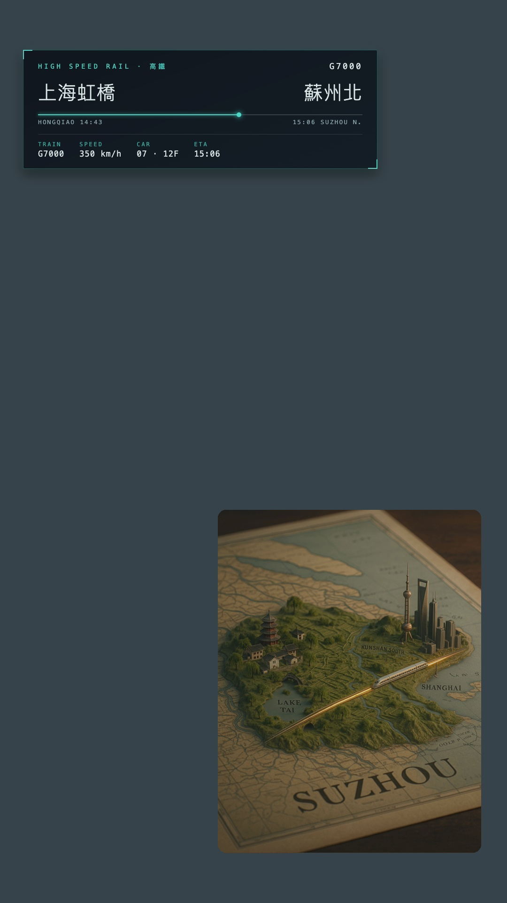
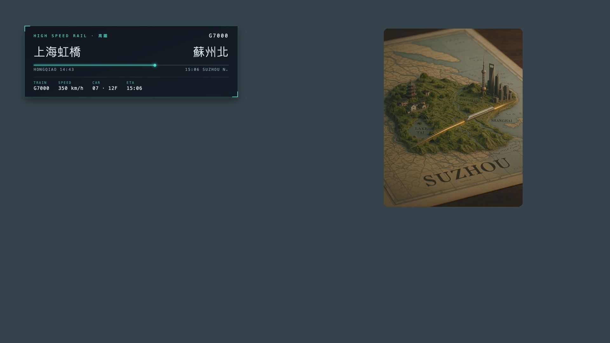
🎫 票（程式出）：科技感 HUD：深色玻璃面板、青色發光細邊、四角準星、等寬字數據列、行程進度軌
🗺️ 地圖：AI 立體浮空地形圖：木桌上的浮雕模型，中間一台高鐵跑過去
②-D 市區捷運巴士 🚏 同一都市內
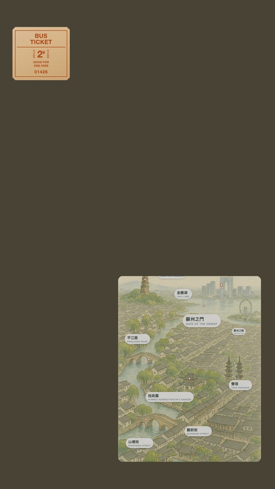
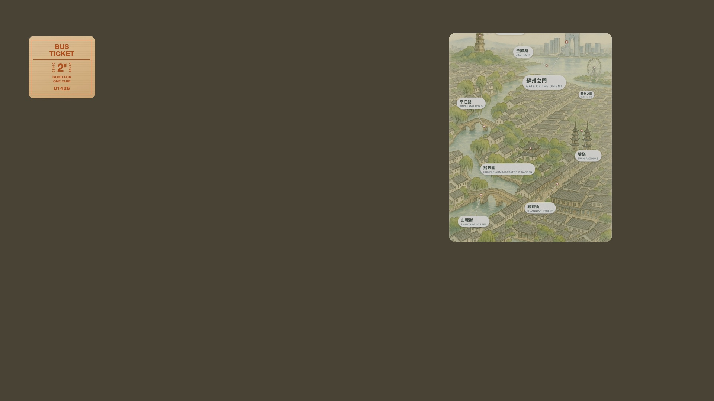
🎫 票（程式出）：牛皮巴士票（切角／粗黑體／票號直排）或剪票根（超大路線號＋剪票孔＋剪訖章）
🗺️ 地圖：AI 水彩鳥瞰全景：整座城市的空拍插畫，地標照真實建築畫，標籤是程式疊的所以字不會錯
②-E 船票 ⛴️ 渡輪／遊船
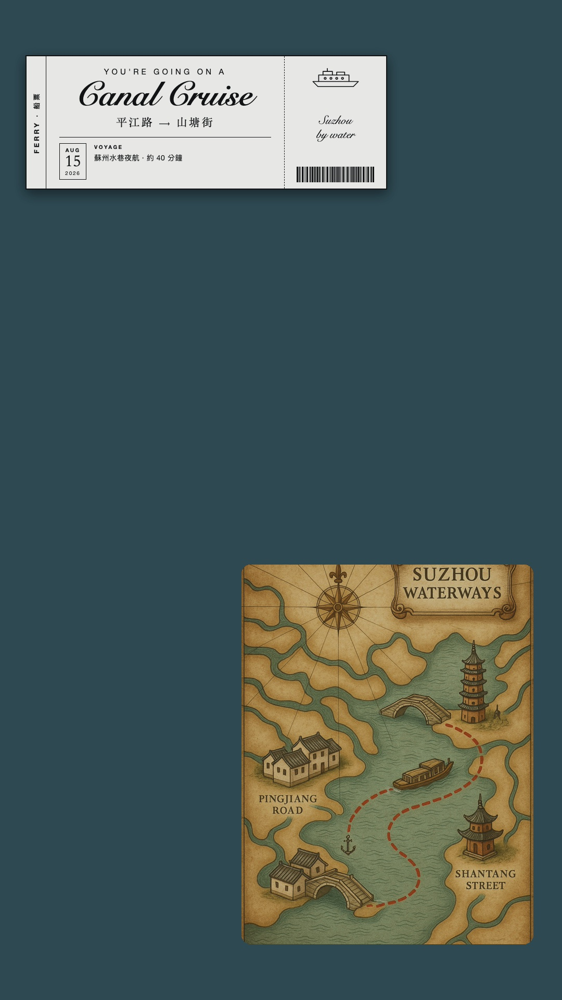
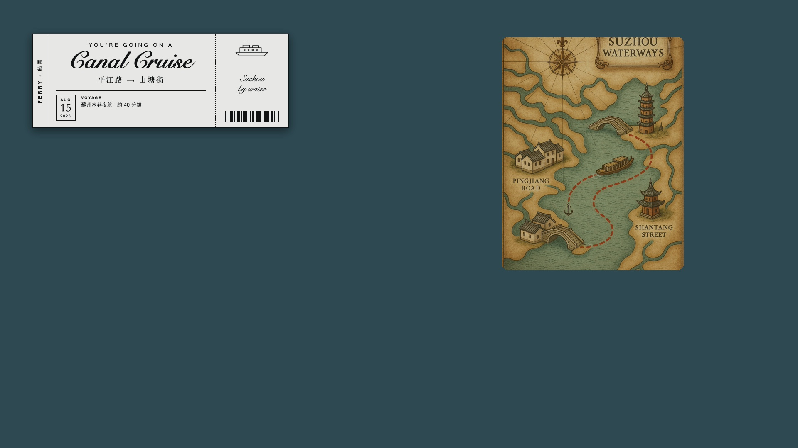
🎫 票（程式出）：黑白高對比禮券感：左直排標籤、花體大標、日期方塊、右票根船身線稿＋條碼
🗺️ 地圖：AI 古海圖：羅盤玫瑰、方位射線、朱紅虛線航線、錨點碼頭
②-F 復古蝕刻車票 🎟️ 任何交通工具
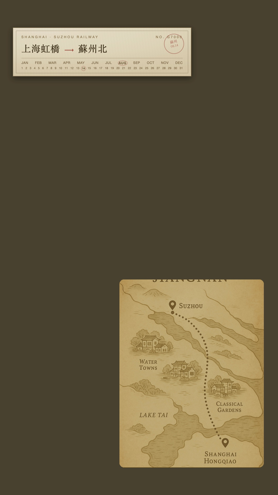
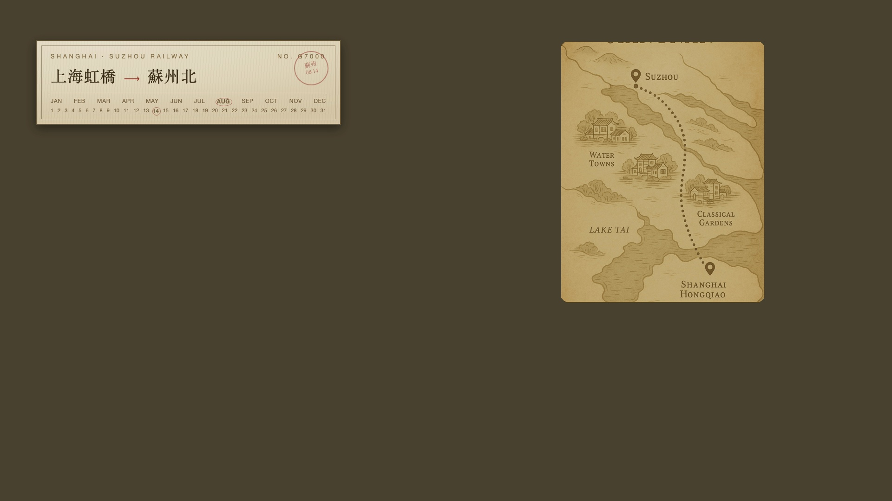
🎫 票（程式出）：維多利亞古董票：雙線外框、月份＋日期格把出發日圈起來、右上圓形紅印
🗺️ 地圖：地圖任選（示範搭 PR-002 手繪區域圖）
📍 景點

🎞️ 全場背景（整支都在）
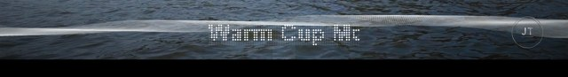
④ 音波緞帶 ＋ 點陣 LED 曲名
音波緞帶：44 條細線疊正弦波做出緞帶扭轉，振幅跟著音樂音量走
（ffmpeg 的 showwaves 做不出來，自己畫的）。
點陣 LED：字縮成 9 排點陣、每格畫圓點，暗燈留很淡的白看得到燈板網格，曲名一格格往左跑。
🖼️ 整支版型（長篇景色模板用）
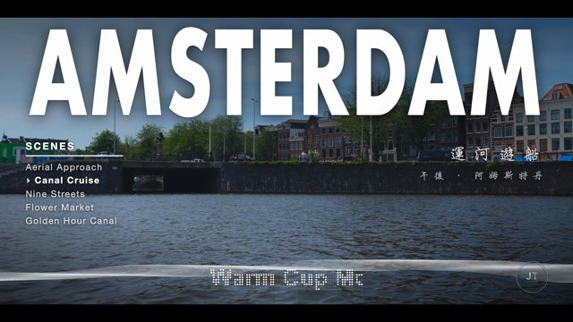
⑤ 長景版型（橫式 16:9）
風景陪伴長片用。大標題滿版＋左清單／右中文副標左右對稱＋底部音波緞帶／點陣 LED 曲名／JT 標。 文字層只顯示 4 秒，底部效果全片保留。
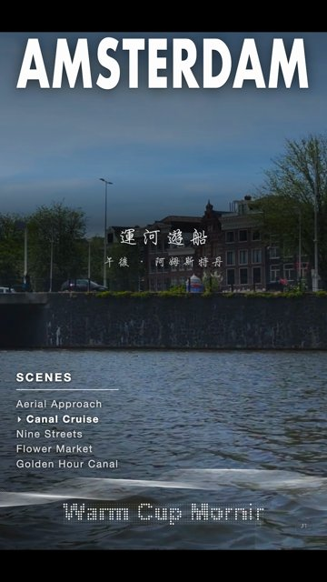
⑤-B 長景版型（直式 9:16）
同一套版型的直式版，不是把橫式壓扁：左右兩欄改上下堆疊、副標置中、 清單移到左下角齊頭靠左、字級各自放大。
⑥ 霓虹標題（文字夾在人物後面）
人像片用。四個字塊＋七款霓虹配色，文字被人物擋住——用 macOS Vision 逐幀去背， 本機跑不用付費 API。🚨 一律拿原生 4K 去背，遮罩才細。
規劃中（陸續補上）
🎞️ 中場 · 對話日記過場
左下角訊息泡泡一句句跳出來（「嗨，我是 James」「現在是阿姆斯特丹的下午兩點」）。 Abao Vision 最有效的一招：兩小時沒旁白的片，靠四句話就有「有人陪你」的感覺。
⑦ 建築卡
建築名＋風格＋年代，接歸檔的建築風格關鍵字（例「哥德式｜科隆大教堂」）。
⑧ 郵戳／明信片感
地名＋座標＋日期，像護照蓋章。
⑨ 餐券／收據感
店名／菜名，票根收據質感。
在那裡勾「關鍵字分類」（移動中/建築/飲食…），勾了就展開對應版型設定，複製規格貼給 Robert，Robert 出透明 ProRes 圖層。＝版型庫看樣挑款、初剪選擇器下單設定。